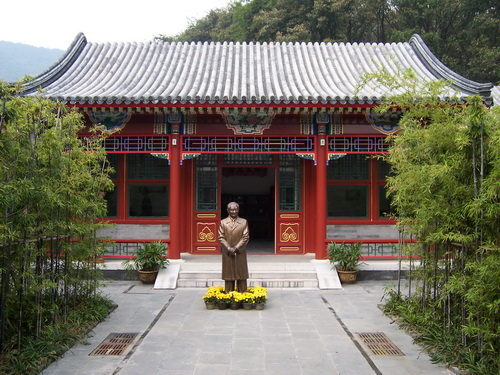
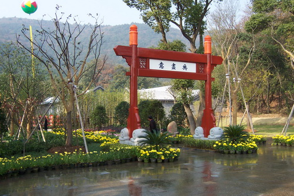
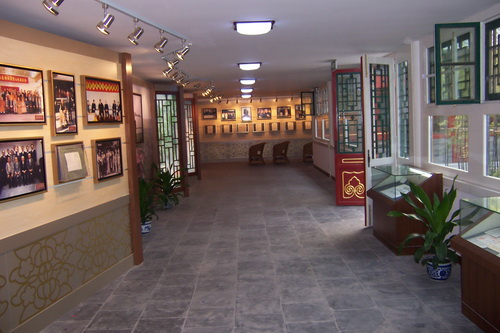

赵朴初纪念馆

纪念馆

纪念馆内陈列了赵朴老生前有关的许多资料
无锡赵朴初纪念馆——“无尽意斋”， 位于无锡灵山大佛脚下西侧，2004年对外开放，赵朴老北京“南小栓一号”故居为原型 。这座原汁原味的老北京四合院，由南北端“无尽意馆 ”、书房兼会客厅以及东西侧小书房、佛堂 、朴老故里等建筑组合而成，占地600多平方米，采用传统砖木结构，所有材料全部来自北京本地。 纪念馆内陈列了赵朴老生前有关的许多资料：近百幅珍贵照片、诗词墨宝以及具有史料价值的相关纪念品。通过照片、书稿、遗物等方式，记载了从50年代佛教协会成立之初到90年代末，赵朴老参与海内外各项重大佛教界活动以及朴老故里、家人的相关 境况。生动详尽地展示了赵朴老对佛教事业作出的巨大贡献。